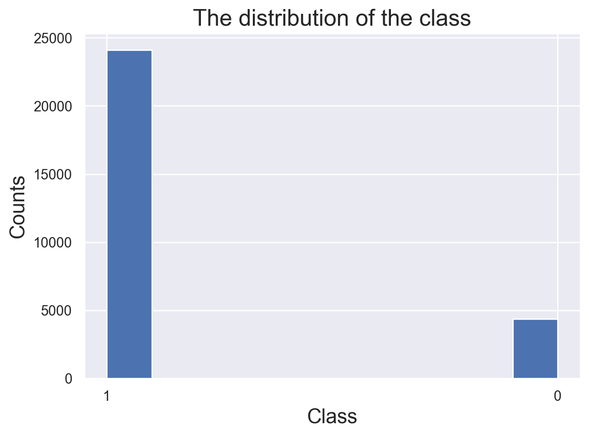
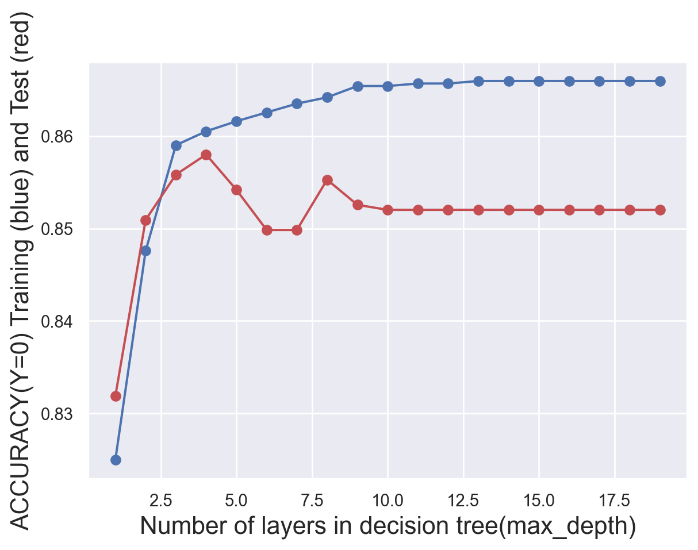
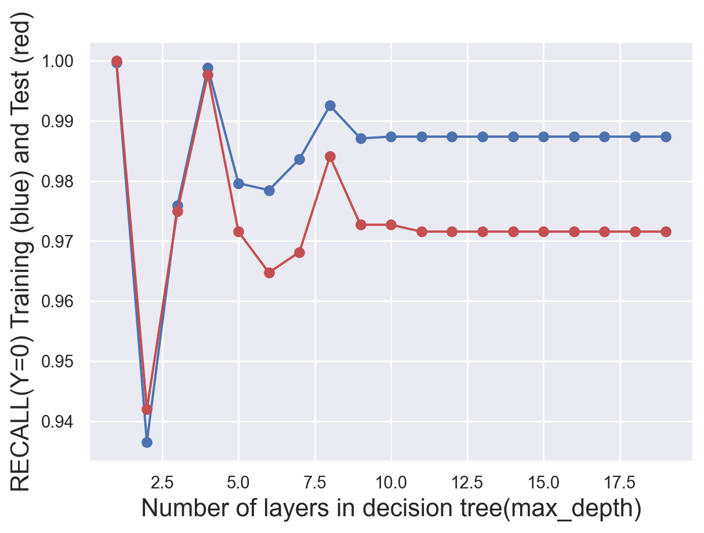
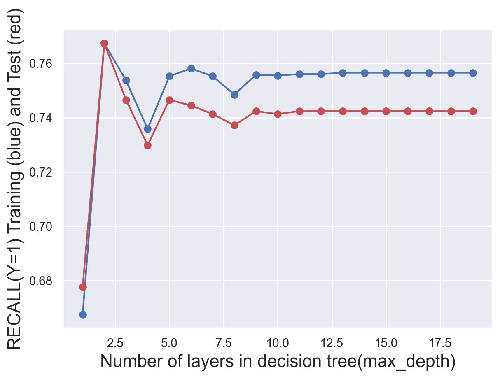

In this tab, we are using classification method called Decision Tree. This method continuouslly asks “whether or not questions” to the input so that it can gradually divides it into different parts. The paths from root to leaf represent classification rules. Each node represents a “test” on an attribute (e.g. whether a coin flip comes up heads or tails), each branch represents the outcome of the test, and each leaf node represents a class label (decision taken after computing all attributes). The decision tree is popular in machine learning since the computing cost is much lower and cheaper.
(Example of the process of decision tree)
But how to decide what to ask? The key here is to use mathematical formulas to quantify one of the following metrics to find the question.
The extent to which we gain new information from new answers (by calculating entropy)
The probability which we incorrectly classify the sample (by calculating gini index and threshold)
By using this method, we can easily find how important an attribute is, and correctly make classification prediction to our target objects. In this project, the decision tree will be used to make predition on the value of good lost in San Francisco Car Breakin incidents in 2018, the incidents where the value of goods lost more than $950 are marked as label “1” and the others are marked as “0” in this case.
Class Distribution and Modification
To figure out how the features like the day of the week, the location, and the lock status effect the value of good lost in the SF car break-ins, we can indeed use decision tree to make prediction.
# convert the categorical variables into float variables in two ways, using replace or dummy variablesdf['Incident.Day.of.Week'].replace(['Monday', 'Tuesday','Wednesday','Thursday','Friday','Saturday','Sunday'],[0,1,2,3,4,5,6],inplace=True)df['Report.Type.Description'].replace(['Coplogic Initial', 'Initial','Coplogic Supplement','Initial Supplement','Vehicle Initial','Vehicle Supplement'],[0,1,2,3,4,5],inplace=True)df['Police.District'].replace(['Central','Northern','Southern','Mission','Richmond','Taraval','Bayview','Park','Ingleside','Tenderloin','Out of SF'],[0,1,2,3,4,5,6,7,8,9,10],inplace=True)df1 = pd.get_dummies(df['locked_type'])df = pd.concat([df, df1], axis=1).reindex(df.index)df.drop('locked_type', axis=1, inplace=True)sns.set_theme()plt.hist(df.extreme_level_label.astype("string"))plt.title("The distribution of the class",fontsize=18)plt.xlabel("Class",fontsize=16)plt.ylabel("Counts",fontsize=16)
Text(0, 0.5, 'Counts')

The as the graph show the dataset is imbalanced which won’t be good fit for the decision tree model since they are sensitive to imbalanced data, thus the data must be modified with random sampling.
Code
df2 = df.drop(df[df['extreme_level_label'] ==1].sample(frac=.8).index)df2['extreme_level_label'].value_counts()sns.set_theme()plt.hist(df2.extreme_level_label.astype("string"))plt.title("The distribution of the class",fontsize=18)plt.xlabel("Class",fontsize=16)plt.ylabel("Counts",fontsize=16)
Text(0, 0.5, 'Counts')
Now the count of two classes are the same, apprioximately 4300 for each. The dataset will be a good training data set for decision tree modeling.
With the baseline model using random claissifer, we can see the accuracy score is about 50%, thus our decision tree model could use this model as a baseline and must perform better accuracy compare this random classifer.
whether the incident was report by the police or self
from locked vehicle
whether the car is locked or unlocked
locked_type
whether the car is locked or unlocked
Police.District
the location where the incident happens
(The names and meanings of features)
4 features was selected to train the model. These features are all attributes that are related to the incidents where the car breakin happens and could be used to make prediction on the value of good lost in the incidients. With these attributes, we have the biggest possibility to find the differences. Noted that all the features were categorical data and has been converted into intergers so it will be a good dataset for prediction.
Model tuning
Code
# try different numbers of layers to find the best onetest_results=[]train_results=[]for num_layer inrange(1,20): model = tree.DecisionTreeClassifier(max_depth=num_layer) model = model.fit(x_train,y_train) yp_train=model.predict(x_train) yp_test=model.predict(x_test)# print(y_pred.shape) test_results.append([num_layer,accuracy_score(y_test, yp_test),recall_score(y_test, yp_test,pos_label=0),recall_score(y_test, yp_test,pos_label=1)]) train_results.append([num_layer,accuracy_score(y_train, yp_train),recall_score(y_train, yp_train,pos_label=0),recall_score(y_train, yp_train,pos_label=1)])test_results=np.array(test_results)train_results=np.array(train_results)#generate plots of the performance of different layers def metric_plot(ylabel,layer,yptrain,yptest): fig=plt.figure() plt.plot(layer,yptrain,'o-',color="b") plt.plot(layer,yptest,'o-',color="r") plt.ylabel(ylabel+" Training (blue) and Test (red)",fontsize=16) plt.xlabel("Number of layers in decision tree(max_depth)",fontsize=16)metric_plot("ACCURACY(Y=0)",test_results[:,0],train_results[:,1],test_results[:,1])metric_plot("RECALL(Y=0)",test_results[:,0],train_results[:,2],test_results[:,2])metric_plot("RECALL(Y=1)",test_results[:,0],train_results[:,3],test_results[:,3])



To find the most suitable number of layers, several plots was produced. We finally find that we should set max_depth as 3.
Final Results
Code
model = tree.DecisionTreeClassifier(max_depth=3)model = model.fit(x_train,y_train)yp_train=model.predict(x_train)yp_test=model.predict(x_test)#write a function to visualize the confusion matrixdef confusion_plot(y_data,y_pred):print("ACCURACY: "+str(accuracy_score(y_data,y_pred))+"\n"+"NEGATIVE RECALL (Y=0): "+str(recall_score(y_data,y_pred,pos_label=0))+"\n"+"NEGATIVE PRECISION (Y=0): "+str(precision_score(y_data,y_pred,pos_label=0))+"\n"+"POSITIVE RECALL (Y=1): "+str(recall_score(y_data,y_pred,pos_label=1))+"\n"+"POSITIVE PRECISION (Y=1): "+str(precision_score(y_data,y_pred,pos_label=1))+"\n" ) cf=confusion_matrix(y_data, y_pred)# customize the anno group_names = ["True Neg","False Pos","False Neg","True Pos"] group_counts = ["{0:0.0f}".format(value) for value in cf.flatten()] group_percentages = ["{0:.2%}".format(value) for value in cf.flatten()/np.sum(cf)] labels = [f"{v1}\n{v2}\n{v3}"for v1, v2, v3 inzip(group_names,group_counts,group_percentages)] labels = np.asarray(labels).reshape(2,2)#plot the heatmap fig=sns.heatmap(cf, annot=labels, fmt="", cmap='Blues') plt.title("Confusion Matrix of Value Prediction - Decision Tree",fontsize=18) fig.set_xticklabels(["Lost more than $950","Lost less than $950"],fontsize=13) fig.set_yticklabels(["Lost more than $950","Lost less than $950"],fontsize=13) fig.set_xlabel("Predicted Labels",fontsize=14) fig.set_ylabel("True Labels",fontsize=14) plt.show()confusion_plot(y_test,yp_test)#write a function to visualize the treedef plot_tree(model,X,Y): fig = plt.figure(figsize=(10,8)) tree_vis= tree.plot_tree(model, feature_names=X.columns,class_names=Y.name,filled=True)plot_tree(model,x_test,y_test)
The overall accuracy for the model is greate, about 85%, however to inprove the model accuracy with this imbalanced dataset, we could probably perform a random forest experiment that keep resampling the data and construct multiple trees and vote on the majority result, or try other classification method.